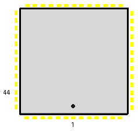

|
|
8.2.6 STe Serie MFP 68901
Atari STe MFP
STe Serie MFP 68901 52 Pin SMD (Mega STe/ TT)
Pin Signal Typ Beschreibung _______________________________________________________________________________ 1,13,14- 21,33 NC Not used 2 R/W- I/O Read/Write 3-7 RS1-RS5 I/O 8 TC 9 SO 10 SI 11 RC 12 Vcc Input +5V Versorgungsspannung 15-18 TAO-TDO I/O 19 XTAL1 Input 2.4576 Mhz 20 XTAL2 Input 2.4576 Mhz 22 TAI 23 TBI 24 RESET- 25-32 IO0-IO7 I/0 I/O Bus 34 TR- 35 RR- 36 IRQ- Input I/O Request 37 IEO- 38 IEI- 39 CLK Input 4 Mhz Takt, Clock 40 GND Input Masse, GND 41-48 D0-D7 I/O Datenbus 49 IACK- 50 DTACK- 51 DS- 52 CS- Input Chipselekt _____________________________________________________________________________
 Abbildung 1 - SMD MFP im TT/MegaSTe
|
|
|